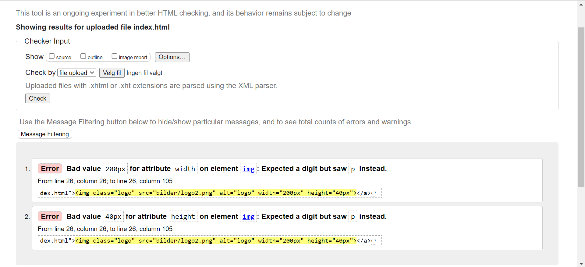
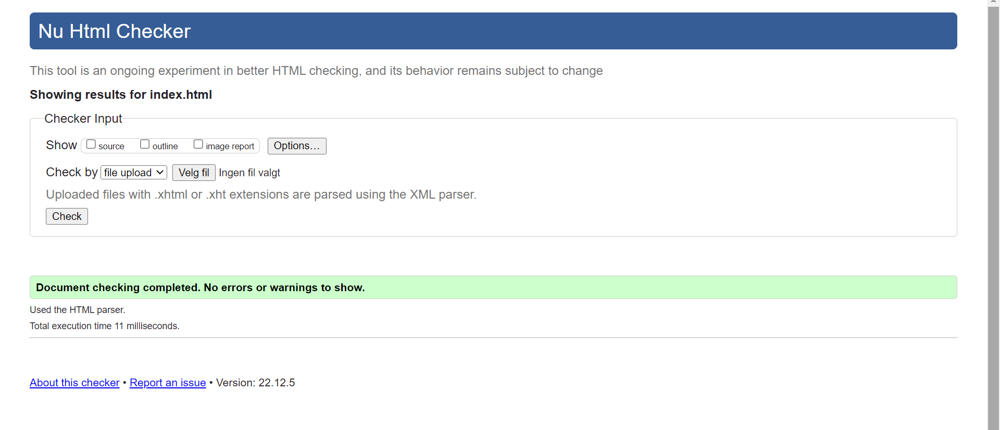

På denne siden skal vi se nærmere på hvordan siden vår er i forhold til tilgjengelighet, samt om
den er innenfor gode rammer når det gjelder universalt design. På grunn av at vi ikke har en link til nettsiden enda, legger vi inn
en og en fil på nettsiden til W3C (Markup Validation Service).
index.html viser at den ikke ønsker at verdiene til høyde og bredde på logoen skal være der. Logoen finnes på alle sidene, så det er greit å
få fiksa. Flytta både høyde og bredde over til css istedenfor og feilmeldingene forsvant.
Før:

Etter:

meny.html viser at det er blitt brukt duplikat av klassen menu-item-img, og at det ikke trengs. Men sånn vi forstår det er det gunstig å ha de slik
fordi da blir alle bildene på menyen plassert slik de skal.
booking.html viser bare at dato-valgene i skjemaet for bestilling av bord er dårlige. Dette er verdier vi kan velge selv så ser ikke helt problemet med det.
Lar det være sånn det er.
kontkat.html viser til det samme som på index.html. Den ønsket ikke ha bredde på bilde i html-fila. Flytta den derfor til css.
topicalpage.html viser ingen feilmeldinger.
Når det gjelder universalt desgin på nettsiden vår føler vi at vi har gjort en god jobb. Den er enkel å bruke og forstå.
Teksstørrelsen på alle sidene er bra og lett å lese, selv for folk med litt dårligere syn. På bildene har vi skrevet inn i alt-elementet
slik at det vil leses opp en beskrivelse av bilde dersom det trengs. Videre er det et gjengående tema i nettsiden vår og alle sidene ser veldig like ut.
Det eneste vi burde lagt mer tid i på nettsiden er nok
hvordan nettsiden vår fungerer på ulike skjermer. Der har vi ikke gjort en så god jobb og heller fokusert kun på desktop-skjerm.